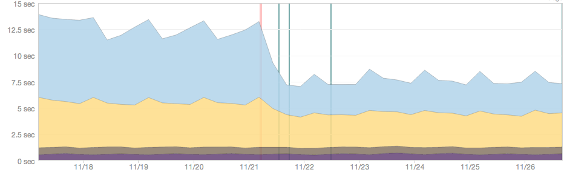
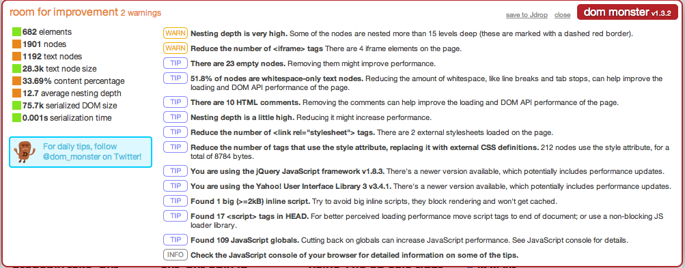

Performance optimisation story
with Marcin Wawrzyniak and Ignacio Garcia
1
Quick roadmap
- The problem
- The opportunity
- Solutions
- Future improvements
2 / 21
The problem
The problem is that when the page takes long to load, bounce rate goes up and user satisfaction drops.

First bits of TR showed up after 11 seconds
3 / 21
The opportunity
A redesign of the homepage had to be done, so I asked Ignacio if we could tune up things a little bit...
he said...

4 / 21
* Nacho Libre (2006) IMDB
5 / 21
Problem #1 Too much blocking assets on page load
We loaded a lot of stuff before user could see the page
-
- Blocking (synchronous) JavaScript in head (inline or src)
- Blocking (synchronous) JavaScript in body, placed randomly (inline or src)
- YUI ?
- jQuery ?
- Analytics ?
- Optimizely ?
- IPC includes ?
- Facebook connect?
- Post.it ?
Everytime the tokenizer gets into the <script> tag (without async or defer), it stops
everything, fetches the resource and/or parses the script - then it continues.
6 / 21
The solutions
Minify and concatenate assets to make less requests
Using sfCombine Plugin and YUI Compressor
We load less stuff before the user sees the page using defer and async attributes.
- async >=IE9 - "A script that will be run
asynchronously as soon as it is available", without blocking DOM construction
- defer >=IE8 - "A script that will not run until
after the page has loaded"

7 / 21
Other optimisations we did
- We moved the rest of images to sprites = 5 requests saved
- Combined almost every CSS stylesheet we had = 3 requests saved
- We removed the CSS for print, in two places = 2 requests
- Removed duplicated scripts (facebook...) - are you sure you don't have any ? = 1x304 (Not Modified) saved
- Used trViewKit::jsSlot() -> moved all inline blocking JS to before body end - probably
big impact
- And of course, we made use of async, in three places, wow.

8 / 21
Results
Around 5 seconds of improvement

9 / 21
Problem #2 Complex DOM and huge CSS files
Using tools like Dom Monster and the Firefox 3D preview we could identify pages with complex markup and with too much nested levels

10 / 21
Firefox 3D view
Yeah, Firefox can do that...

Doing a refresh of the site was a good excuse to make a lighter DOM
11 / 21
Make a lighter CSS using SASS
We had a legacy CSS file that had rules for pretty much all sections of the site.
We started splitting things up in smaller CSS files, and section by section of the site. That means that these process could be done gradually.
We went from having a massive file with 1500 lines of CSS to one with 600 lines in it.
The results were really good, and much more than we expected so the site became 1.5 seconds faster
...and also we had a much better organised CSS structure. Things were under control again.
12 / 21
You can also improve the speed of CSS rendering avoiding:
Ancestors like
html div tr td {
...some css
}
Universal selectors like
* {
...some css
}
Github has a great presentation about this. We will provide the links at the end.
13 / 21
Problem #3 Loading things that we don´t need...yet!
Disqus was loading on every content page, but it appears pretty much at the end of it.
So we didn't load it on page load, but we activate it once the user scrolls to a certain position.
See it in action
14 / 21
In plans: 1/3

-
Sharded CDN (cookie-less) domains
- no cookie payload (8kB)
- more
parallel connections
- we would like to serve JS and CSS from static domains yet
15 / 21
In plans: 2/3
We would like to try lazy loading of images on the lists (Echo?)
- Usually out of viewport
- 37 requests to static.trustedreviews.com
- ... these requests delay onload
- ... we can also load image when user scrolls to it
- ... but sharded CDN can be the optimal solution here.

16 / 21
In plans: 3/3
- we would like to try localStorage, and keep there YUI and jquery, and large inline scripts (1kB+) - basket.js
17 / 21
Tips
AKAMAI
When you specify a vary header, other than: Vary: Accept-Encoding AKAMAI won't cache anything!
Other
Use CSS instead of images if possible - buttons? arrows? shadows? borders? gradient? transparency? (CSS Shack - Photoshop for CSS)
18 / 21
The thing is...
"It doesn't matter how fast your website is as long as it is faster than the competition"

19 / 21
Must read
Gone In 60 Frames Per Second: A Pinterest Paint Performance Case Study
Prioritize Your Critical CSS and Images to render site fast
* DevTools Tips and Tricks
* WebPerf Crash Course
Improving Web App Performance With the Chrome DevTools Timeline and Profiles
GitHub's CSS Performance
http://bit.do/trusted
* If you don't have a lot of time, pick these two.
20 / 21
Thanks and happy Valentine's day!
Questions and discussion...